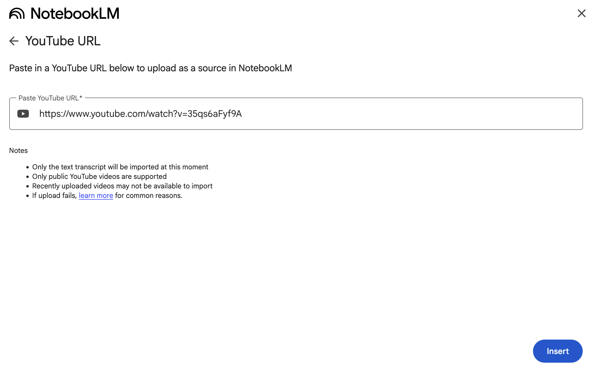

NotebookLMにYouTubeのアニメを入れるのは、いいぞ
- Event:
アニメから得た学びを発表会 LT
- Presented:
2025/05/16 nikkie
お前、誰よ
nikkie（にっきー）
Pythonとアニメが好き
4月から 毎週OSSリリース 始めました（1つ1つは小さいです）
すぐアイマスに影響されます
ルビィちゃん！
は～い
何が好き？
板チョコアイス
森永製菓の板チョコアイスを差し入れ（予定）
私はレシートが手に入ってウハウハ
本編：みんな〜 NotebookLM 使ってる〜？
NotebookLM
IMO: 人類史上最高 の発明
2023年のGoogle I/Oで発表（ブログ）
a new kind of notebook designed to help people learn faster.
無料で使える AI notebook
GoogleのLLM Geminiが裏にいる
読みたい文献を指定（URL指定、ファイルアップロード）
Geminiに質問しながら 読み進められる！
DeNA南場さん「ぶっこむ」
ぶっこむ
Perplexityで「その方についての必読記事はなんですか」と言ってですねそれでそこのURLを全てNotebookLMにぶっこむと (1:57~)
技術文書 をぶっこむと捗るぞ
質問以外にも便利な機能
Audio Overviews （音声概要）
Discover Sources （文献を検索しに行ける）
音声概要は 日本語 もサポート！
2025/04/29 NotebookLM Audio Overviews are now available in over 50 languages
男女2人の話者によるPodcast（5〜9分）
プロンプトでカスタマイズできるらしい（未検証）
💡 YouTubeのアニメ もぶっこむ！
Geminiと一緒にアニメを見る！
⚠️Geminiは画を見ていません。 音声書き起こしのみ です
Only the text transcript will be imported at this moment
今回のアニメ：青春ブタ野郎
電撃文庫原作、2018年アニメ化
じきにミニスカサンタが来ます
思春期症候群
主人公 梓川咲太 高校2年生
思春期特有の不安定な精神状態によって引き起こされる現象数々
おるすばん妹 篇
凝縮された総集編
おるすばん妹総集編をぶっこむ！
Podcastで語られた おるすばん妹
感じた せつなさが言語化 された！！
セリフの文字起こししかないはずなのにすごい
ハルシネーションもあります（Not for me な方もいそう）
喪失と再生 ：逆説
（内容に踏み込むので懇親会で！）
まとめ🌯：NotebookLMにYouTubeのアニメを入れるのは、いいぞ
青ブタ おるすばん妹 総集編をPodcastにしたら、感動が深まった
技術文書もYouTubeもガンガンぶっこもう！
AIと一緒にアニメを見た と言えるのでは
ご清聴ありがとうございました
現在 再放送 してます！